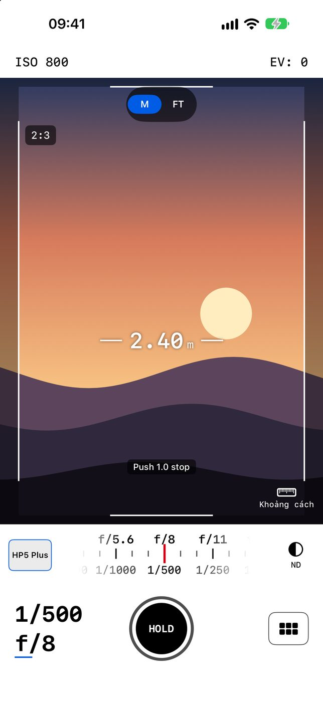
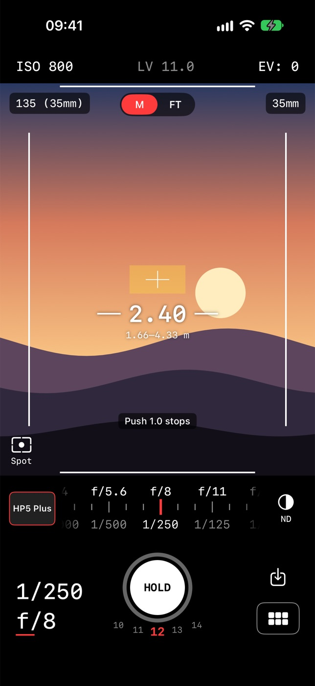
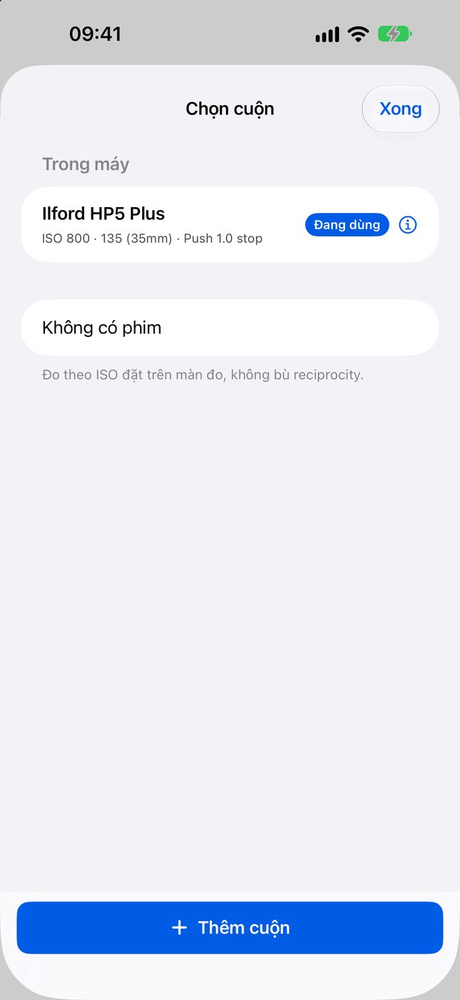
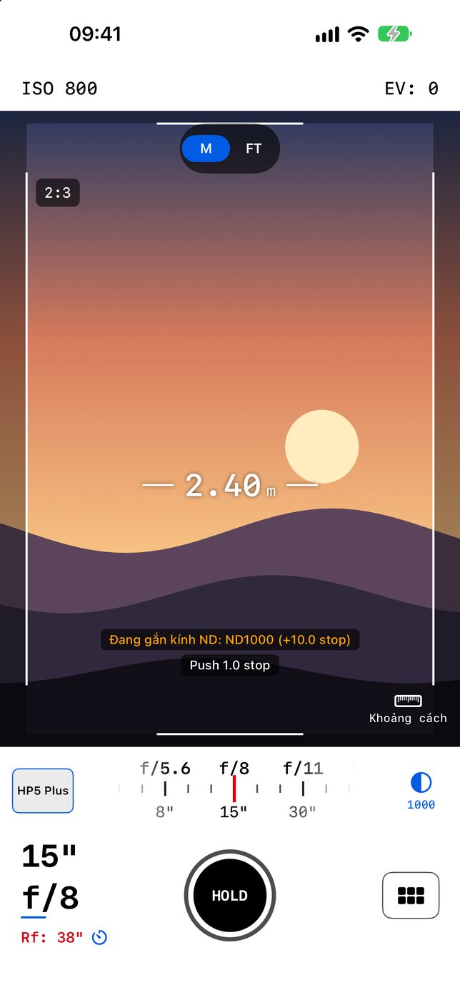

Đo sáng cho máy film, ngay trên iPhoneA film light meter in your iPhone
Chạm vào chỗ bạn quan tâm. App cho biết tốc độ, khẩu độ và khoảng cách tại đúng điểm đó, rồi ghi vào cuộn phim đang chụp.
Tap the part of the scene you care about. The app gives you shutter speed, aperture and distance at that exact spot, then logs it to the roll you're shooting.
Tham gia TestFlightJoin on TestFlight
Thử phép tínhTry the maths
Đây là công thức app dùng. Trên iPhone, độ sáng cảnh đến từ camera; ở đây bạn tự kéo.
This is the formula the app uses. On an iPhone, scene brightness comes from the camera. Here, you set it yourself.
Một ô vàng, hai số đoOne patch, two readings
Ô vàng vừa là vùng đo sáng vừa là nơi lấy khoảng cách. Số khoảng cách đi thẳng vào độ sâu trường ảnh, nên bạn thấy luôn dải nét theo khẩu độ và tiêu cự đang chọn.
The yellow patch is both the metering area and where distance is read. That distance feeds depth of field directly, so the sharp range follows your aperture and focal length.
- LiDARTrên iPhone Pro, trong khoảng 5 m.On iPhone Pro models, within about 5 m.
- ≈Máy hai camera ước lượng khoảng cách, app đánh dấu là xấp xỉ.Dual-camera iPhones estimate distance, marked as approximate.
- MANUALMáy một camera nhập khoảng cách bằng tay.Single-camera iPhones take distance by hand.

Cuộn phim nằm trong appYour roll lives in the app
Nạp một cuộn và app đặt sẵn ISO, khổ phim và dữ liệu reciprocity. Mỗi lần lưu, số đo được ghi vào đúng khung, còn bộ đếm dưới nút HOLD tăng lên.
Load a roll and the app sets the speed, format and reciprocity data. Each save goes to the right frame, and the counter under HOLD moves on.
- EIPush và pull, app báo số stop so với ISO gốc.Push and pull, shown in stops from box speed.
- 135 / 120Half frame, 35mm, 645, 6x6, 6x7, 6x9.Half frame, 35mm, 645, 6x6, 6x7, 6x9.
- CSVXuất nhật ký kèm cuộn, khung và khoảng cách.Export the log with roll, frame and distance.

Phơi dài, khỏi tính nhẩmLong exposures, no mental maths
Chọn kính ND và loại phim, app tính thời gian đã bù reciprocity. Giữ nút HOLD để mở đồng hồ đếm ngược.
Pick an ND filter and a film. The app works out the reciprocity-corrected time. Press and hold HOLD to start the countdown.
- ND2–ND10000Tự bù số stop của kính.Filter stops are applied for you.
- t^p17 loại phim, và bạn có thể tự thêm phim khác. Portra, Ektar và Gold là số ước lượng, app ghi rõ.17 film stocks, and you can add your own. Portra, Ektar and Gold are estimates, and the app says so.

Thông sốSpecs
- iPhoneiOS 17 trở lêniOS 17 or later
- MeteringSpot chạm chọn điểm, hoặc Average toàn khung. Đo phản xạ.Tap-to-place spot, or whole-frame average. Reflected light.
- Av / Tv / MƯu tiên khẩu, ưu tiên tốc, hoặc thủ công với kim báo thừa thiếu sáng.Aperture priority, shutter priority, or manual with an over/under scale.
- 1/3 · 1/2 · 1Bước chỉnh theo vòng số của máy bạn.Steps that match your camera's clicks.
- OfflineKhông cần tài khoản hay mạng. Dữ liệu nằm trên máy bạn.No account or connection needed. Your data stays on your phone.
Đây là bản thửThis is a beta
Mỗi iPhone đo lệch một chút, nên hãy hiệu chuẩn một lần trước khi tin số đo cho một cuộn phim quan trọng.
Every iPhone reads a little differently, so calibrate once before trusting it with a roll that matters.
- Đo cùng một mảng xám đều bằng app và bằng máy đo hoặc máy ảnh bạn tin tưởng.
- Vào nút lưới, mục Calibration, chỉnh offset đến khi hai số khớp.
- Meter the same even grey subject with the app and with a meter or camera you trust.
- Open the grid button, go to Calibration, and shift the offset until the readings match.